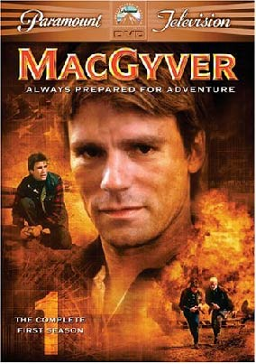
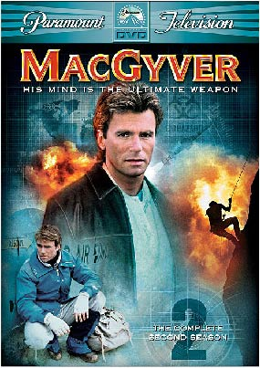
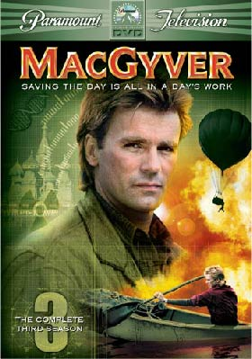
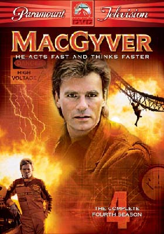
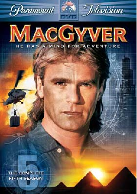
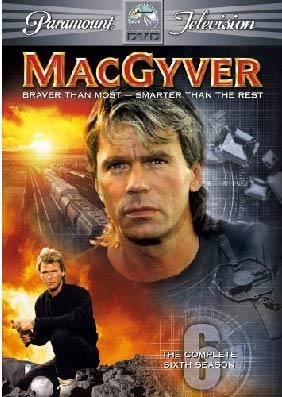
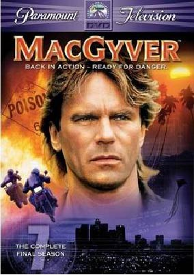

Sesong 1:
- Pilot
- The Golden Triangle
- Thief of Budapest
- The Gauntlert
- The Heist
- Trumbo`s World
- Last Stand
- Hellfire
- The Prodigal
- Target MacGyver
- Nightmares
- Deathlock
- Flames End
- Countdown
- The Enemy Within
- Every Time She Smiles
- To Be A Man
- Ugly Duckling
- Slow Death
- The Escape
- A Prisoner Of Conscience
- The Assasin
Sesong 2:
- The Human Factor
- The Eraser
- Twice Stung
- The Wich Child
- Final Approach
- Jack Of Lies
- The Road Not Taken
- Eagles
- Silent World
- Three For The Road
- Phoenix Under Siege
- Family Matter
- Soft Touch
- Birthday
- Pirates
- Out In The Cold
- Dalton, Jack Of Spies
- Partners
- Bushmaster
- Friends
- D.O.A.:MacGyver
- For Love Or Money
Sesong 3:
- Lost Love(To deler)
- Lost Love(To deler)
- Back From The Dead
- Ghost Ship
- Fire And Ice
- GX-1
- Jack In The Box
- The Widowmaker
- Hell Week
- Blow Out
- Kill Zone
- Early Retirement
- Thin Ice
- The Odd Triple
- The Negotiator
- The Spoilers
- Mask Of The Wolf
- Rock The Caradle
- The Endangered
- Murderer`s Sky
Sesong 4:
- The Secret Of Parker House
- Blood Brothers
- The Outsiders
- On A Wing And A Prayer
- Collision Course
- The Survivors
- Deadly Dreams
- Ma Dalton
- Cleo Rocks
- Fraternity Of Thieves
- The Battle Of Tommy Giordano
- The Challenge
- Runners
- Gold Rush
- The Invisible Killer
- Brainwashed
- Easy Target
- Renegade
- Unfinished Business
Sesong 5:
- Legend Of The Holy Rose
- Legend Of The Holy Rose
- The Black Corsage
- Cease Fire
- Second Chance
- Halloween Knights
- Children Of Light
- Black Rhino
- The Ten Percent Solution
- Two Times Trouble
- The Madonna
- Serenity
- Live And Learn
- Log Jam
- The Treasure Of Manco
- Jennys Chance
- Deep Cover
- The Lost Amadeus
- Hearts Of Steel
- Rush To Judgement
- Passages
Sesong 6:
- Tough Boys
- Humanity
- The Gun
- Twenty Questions
- The Wall
- Lesson In Evil
- Harrt`s Will
- MacGyver`s Women
- Bitter Harvest
- The Visitor
- Squeeze Play
- Jerico Games
- The Wasteland
- Eye Of Osiris
- High Controll
- There But For The Grace
- Blind Faithe
- Faith,Hope & Charity
- Strictly Business
- Trail Of Tears
- Hind-Sight
Sesong 7:
- Honest Abe
- The Hood
- Obsessed
- The Prometheus Syndrome
- The Coltons
- Walking Dead
- Good Knight Macgyver
- Good Knight Macgyver
- Deadly Silents
- Split Decision
- Gunz `N Boyz
- Off The Wall
- The Stringer
- The Mountain Of Youth







Her finner du en oversikt over sesongene og hva de forskjellige episondene i sesongene heter.